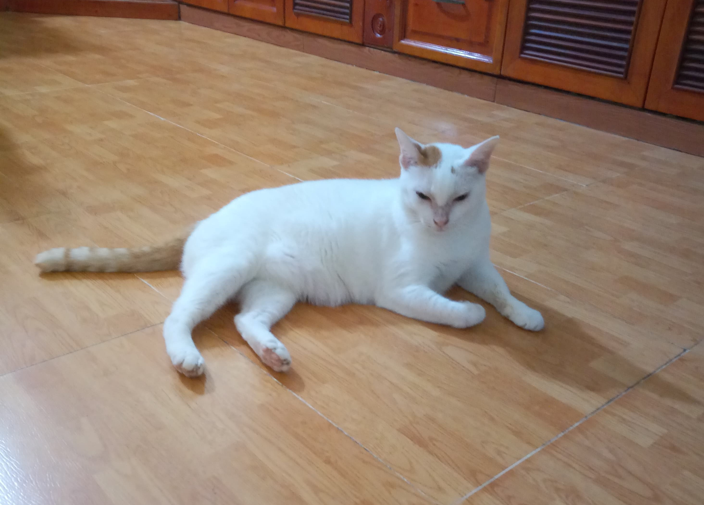

Tina
Sex: Female
D.O.B: September 2006
In the cat world, Tina must be a model. She has lovely white fur, long legs and a pretty tail.
She spends most of her time lying, wagging her tail. And she hates it when people touch her tail or stop it .
Besides that, she has a great personality. She's charming and lovable. When Tina was young, she usually told us
stories (by meowing nonstop) after she's back from daily tours around the neighborhood. As she grew, she took care
of other baby cats at home. But my family know that she's a badass outside.